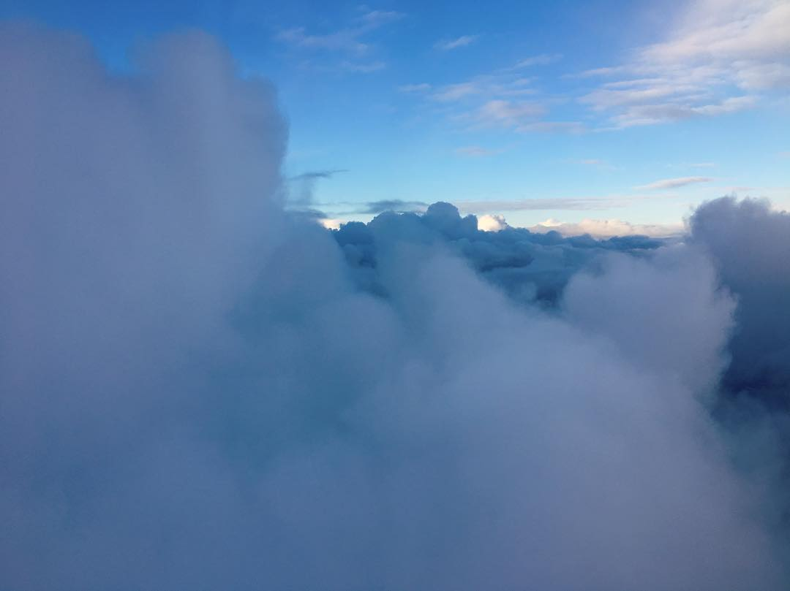

Hi, I'm AJ! I explored Amsterdam, Gouda, Brussels, Paris, Munich, and Cologne by hostel, foot and train for two weeks in 2018. Here's a quick outline of my trip.
Tuesday, September 11, 2018
First flight!
From: Lambert-St Louis International Airport (STL), Tuesday, September 11, 2018 10:55:00 PM
Flight duration : 06:45, To: Keflavik International Airport (KEF)

Wednesday, September 12, 2018
Second flight!
From: Keflavik International Airport (KEF), 12:00:00 PM
To: Schiphol Airport (AMS), 5:25:00 PM
ARRIVED IN AMSTERDAM!
Took a train from the airport to Amsterdam Centraal, then walked through a tunnel and took the free ferry to Buiksloterweg / Amsterdam Noord (North) where my hostel was located.

Checked in at ClinkNOORD Hostel. Unpacked my bag, locked up my belongings, then hit the streets to explore and find dinner for my first meal in Europe.

Thursday, September 13, 2018
Enjoyed a free walking tour of Amsterdam, courtesy of Sandeman's.

Ate lots of cheese.

Toured the Van Gogh Museum.
Friday, September 14, 2018
Took a boat tour of the Amsterdam canals.

Toured the Rijksmuseum
Saturday, September 15, 2018
Checked out of ClinkNOORD by 10:00 and stashed my backpack in a locker for a few hours.
Enjoyed a countryside bike tour in Amsterdam Noord. Saw a few windmills and tiny houses on canals. Beautiful scenery.


Train trip! 13:49 Amsterdam Centraal >> 14:41 Gouda
18:00 Checked in @ AirBNB, (private residence), Gouda, Netherlands
Sunday, September 16, 2018
12:00 Check out of AirBNB
TRAIN
14:42 Gouda
17:15 Bruxelles MIDI
Check in at MEININGER Hotel Brüssel City Center, Quai du Hainaut, Sint-Jans-Molenbeek, Belgium
Monday, September 17, 2018
MEININGER Hotel Brüssel City Center, Quai du Hainaut, Sint-Jans-Molenbeek, Belgium
Tuesday, September 18, 2018
11am Check out of MEININGER Hotel Brüssel City Center, Quai du Hainaut, Sint-Jans-Molenbeek, Belgium
25min (2km) walk to Bruxelles-Midi
TRAIN
15:13 Bruxelles MIDI
16:35 Gare du Nord
1.5h (7km=4.5mi) walk to 3Ducks
OR 20min walk to Republique station then 30min on Metro train #8
Check in at 3 Ducks Eiffel Tower, 3 Ducks, 6 Place Etienne Pernet, 75015 Paris, France
Wednesday, September 19, 2018
3 Ducks, 6 Place Etienne Pernet, 75015 Paris, France
Thursday, September 20, 2018
3 Ducks, 6 Place Etienne Pernet, 75015 Paris, France
Friday, September 21, 2018
10:30 Check out of 3 Ducks, 6 Place Etienne Pernet, 75015 Paris, France
TRAIN
15:55 Gare de l’Est
21:36 München Hbf
30min walk (2.5km) from München Hbf
Check in at Christa’s AirBNB, (private residence), Munich, Bayern 80336
Saturday, September 22, 2018
Stay at Christa's AirBNB
Oktoberfest opening ceremonies
Sunday, September 23, 2018
11:00 Check out of AirBNB, Munich, Bayern 80336
TRAIN
12:28 München Hbf
17:05 Köln Hbf
Check in at Cologne Downtown Hostel, Cologne Downtown Hostel, Hohe Str. 30A, 50667 Köln, Germany
Monday, September 24, 2018
11:00 Check out of Cologne Downtown Hostel, Hohe Str. 30A, 50667 Köln, Germany
TRAIN
14:46 Köln Hbf
17:28 Amsterdam Centraal
Check in at ClinkNOORD, Badhuiskade 3, 1031 KV Amsterdam
Tuesday, September 25, 2018
10:00 Check out of ClinkNOORD, Badhuiskade 3, 1031 KV Amsterdam
From: Schiphol Airport (AMS)
Tuesday, September 25, 2018 12:25:00 PM
Flight duration : 03:20
To: Keflavik International Airport (KEF)
Tuesday, September 25, 2018 1:45:00 PM
From: Keflavik International Airport (KEF)
Tuesday, September 25, 2018 5:20:00 PM
Flight duration : 07:20
To: Lambert-St Louis International Airport (STL)
Tuesday, September 25, 2018 7:40:00 PM